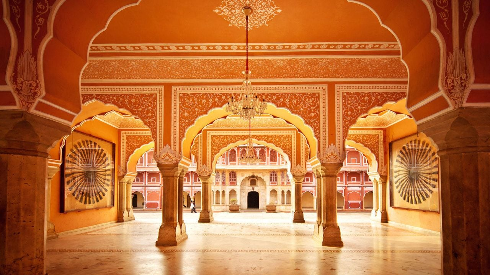
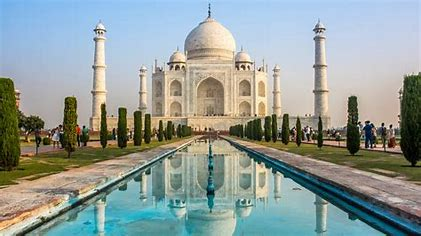
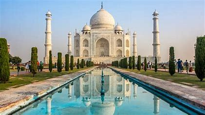
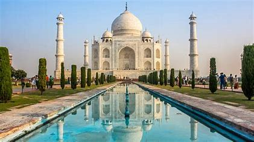
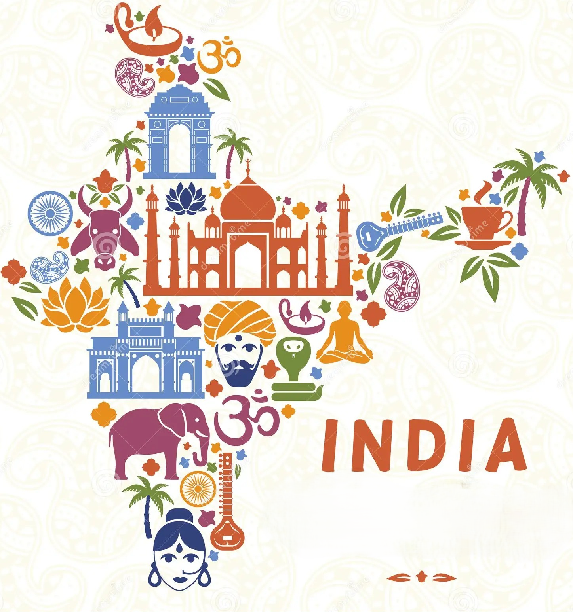

 


WELCOME TO THE WEBSITE!!!
Welcome to our State Culture Information website! Here, you’ll find a rich tapestry
of resources dedicated to exploring and celebrating the diverse cultural heritage of our state.
From historical landmarks and local traditions to art, music, and cuisine, we aim to provide a
comprehensive guide to understanding and appreciating the unique cultural landscape.
The "STATE CULTURE INFORMATION WEBSITE" is an online platform designed
to be a centralized hub for all information related to the culture heritage,
tradition, and practices of a specific state. the system is designed to provide
users with easy access to infromation on the culture landscape of the state's including
it's history, art, frstivals, cuisine and local customs.
Read more...
